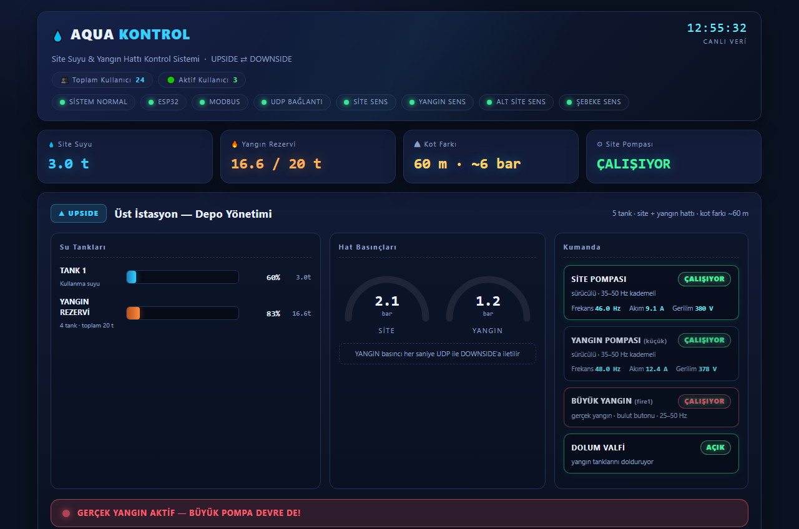

🚒 Yangın hattı güvenliği
Yangın rezervi asla boş kalmaz, hat asla basınçsız bırakılmaz.
- Yangın hattı sürekli 2.3–3.0 bar basınçta tutulur.
- Joker pompa sürekli basınç sağlar; yangın pompası(ları) gerçek yangında devreye girer.
- Hidrant pompası alttan destek verir: UDP ile gelen basınç 2.0 bar altına düşünce otomatik çalışır, 2.5 bar üstünde durur.
- Yangın tankları biterse acil dolum valfi otomatik açılır.
- Gerçek yangın modunda panelde kırmızı alarm bandı belirir ve alarm verilir.
- İstenirse alev / duman algılayıcıları entegre edilir.
Yangın pompaları kademeli çalışır (frekanslar sitemize göre yapılandırılır); tank seviyesi eşiğin altına inerse tank koruması devreye girer.
